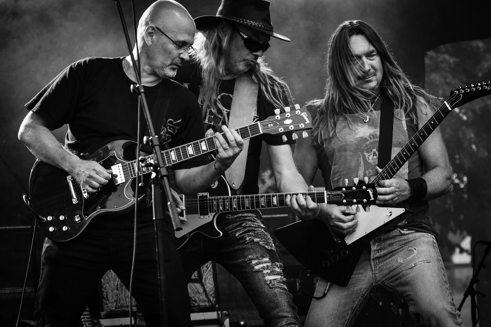
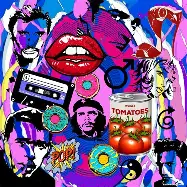
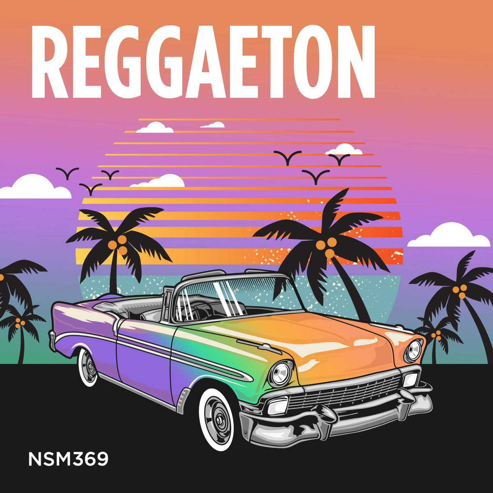
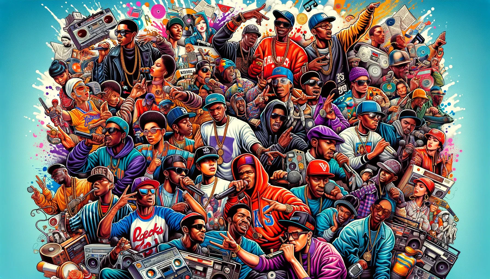

Here are some popular musical genres:
|
Pop Rock Electronic Reggaeton Hip Hop |
||||
|---|---|---|---|---|
 |
 |
 |
 |
- Pop
- Rock
- Electronic
- Reggaeton
- Hip Hop
Pop music is a distinct genre of popular music that originated in its modern form during the mid-1950s in the United States and the United Kingdom.
While the term is a shortened form of "popular music", the two concepts are not entirely interchangeable; "popular music" refers broadly to any music with wide, mass market appeal, whereas "pop music" describes a specific genre characterized by accessible styling, high commercial focus, and explicit structural elements
Rock music is a broad genre of popular music that originated as "rock and roll" in the United States in the late 1940s and early 1950s, developing into a range of different styles in the 1960s and later, particularly in the United States and the United Kingdom.
It has its roots in 1940s and 1950s rock and roll, a style which drew heavily from the genres of blues, rhythm and blues, and from country music. Rock music also drew on a number of other genres such as electric blues and folk, and incorporated influences from jazz, classical and other musical sources.
Electronic music is music that employs electronic musical instruments, digital instruments, or circuitry-based music technology in its creation. It includes both music made using electronic equipment and music that uses electronic technology as an essential part of its production process.
Reggaeton is a music style that originated in Puerto Rico during the late 1990s. It is influenced by hip hop and Latin American and Caribbean music. Vocals include rapping and singing, typically in Spanish. It is also influenced by dancehall, a genre of Jamaican popular music that originated in the late 1970s.
Hip hop music, also called hip-hop or rap music, is a genre of popular music developed in the United States by inner-city African Americans and Latino Americans in the Bronx borough of New York City in the 1970s.
It consists of a stylized rhythmic music that commonly accompanies rapping, a rhythmic and rhyming speech that is chanted. It developed as part of hip hop culture, a subculture defined by four key stylistic elements: MCing/rapping, DJing/scratching with turntables, break dancing, and graffiti art.